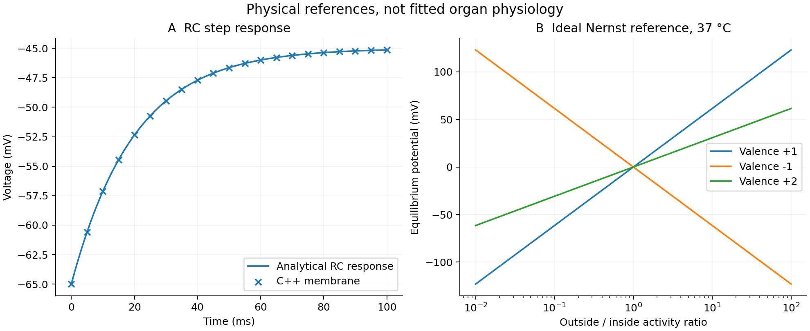
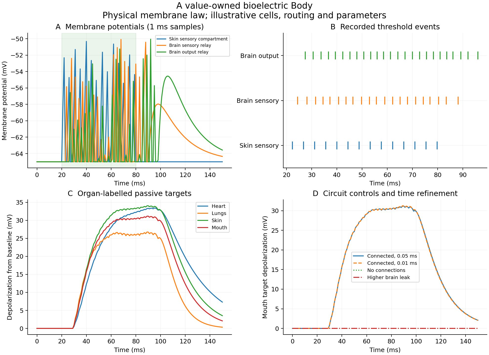

Daily milestone / Bioelectricity and C++ ownership
A Brain belongs
to a Body.
A small electrical model with meaningful ownership: membranes belong to cells, cells to tissues, organs to the body. The nervous system describes connections without owning another copy of a cell.
Originating framework and direction: Michael Emanuel Glover. Implementation, analysis and teaching developed with the assistant.
01 / Composition
Own the parts. Name the connections.
The physical Brain is an owned organ component. The existing cognitive mind::Brain remains a separate model of memory and predictions. Heart, Lungs, Skin and Mouth are represented only to the electrical detail needed here.
Rule of Zero
Cells, tissues and organs are values. Standard containers and optional members manage their own storage. These new classes need no handwritten destructor, manual deletion, or shutdown sequence.
Independent copies
The connection graph stores body-local cell addresses. A copied body gets independent cells and events; its wiring resolves inside that copy. Tests check construction, destruction, copies and moves.
02 / Physical quantities
A membrane stores charge and carries current.
C dV/dt = I_in + gL*(EL - V) + Σ g_syn*(E_syn - V) C: picofarads V: millivolts I: picoamps g: nanosiemens time: milliseconds
The constant-input RC response and local threshold-crossing times are solved analytically. Synaptic conductances decay exponentially and act after a delay. Threshold, reset and refractory rules provide a reduced spike model; a spike is recorded as an event.

03 / A causal circuit
From a sensory pulse to peripheral targets.
Ten membrane compartments and six delayed connections form a small example. A current pulse drives a Skin sensory compartment; two Brain relays route events to organ-labelled passive targets.

| Scenario | Sensory | Brain relay | Brain output |
|---|---|---|---|
| Connected | 14 | 21 | 25 |
| Disconnected routes | 14 | 0 | 0 |
| Higher relay leak | 14 | 0 | 0 |
The 0.05 and 0.01 ms simulations have the same spike counts. Their sampled target voltages differ by less than 0.5 mV. The two controls distinguish loss of routing from loss of excitability in this circuit; they are not diagnoses or lithium-response predictions.
04 / Small lessons, inspectable code
We can still take one class at a time.
#include "bioelectric_body.hpp"
int main() {
auto model = virtual_cell::electric::make_body_example("Alex");
const auto& brain = model.person.body().brain();
const auto count = brain.tissue(0).cell_count(); // 2
(void) count;
} // owned members clean themselves upThe gradual guide starts with ownership, then optional values, brief borrowing, membrane state, units and cell IDs. No one needs to learn the full implementation in one sitting.
05 / Continue from evidence
Eight C++ suites, and the biochemical foundation.
Tests cover RC equations, Nernst signs, units, refractory behavior, delayed transmission, model composition, and independent copied states. The five empirical-analysis Python checks also pass. The numerical protocol checks disconnected and increased-leak controls and step refinement.
cmake -S . -B build cmake --build build -j 2 ctest --test-dir build --output-on-failure ./build/bioelectric_demo python3 experiments/bioelectric/analyze.py
The next empirical task is to estimate capacitance and leak from measured current-clamp recordings, then predict withheld pulses. The earlier IMPase assays and enzyme-cycle work remain available; linking them to electrical parameters requires its own measurements.